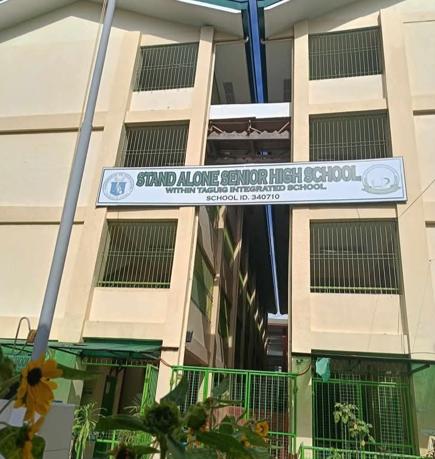

GRADE 11-PRODUCTION
HOME GALLERY CALENDAR

STAND ALONE SENIOR HIGH SCHOOL
In Taguig City, one notable example is the Stand Alone Senior High School (SASH) within the Taguig Integrated School. This school offers a variety of academic and technical vocational tracks, including STEM (Science, Technology, Engineering, and Mathematics), ABM (Accountancy, Business, and Management), and Technical Vocational & Livelihood tracks. These tracks provide students with specialized knowledge and skills in areas like mechatronics servicing, bookkeeping, and dressmaking
NICM MARLON P DIVINAGRACIA
11-PRODUCTION